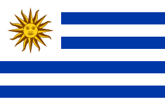

Nombre del país: Uruguay
Datos Generales
Uruguay es un país de Sudamérica conocido por su interior verde y costa bordeada de playas. La capital, Montevideo, se ubica en torno a la plaza Independencia, donde alguna vez hubo una ciudadela española.
Esta lleva a la Ciudad Vieja, casas coloniales y el Mercado del Puerto con muchos restaurantes de carnes. La Rambla es un paseo costero con puestos de pescados, muelles y parques.